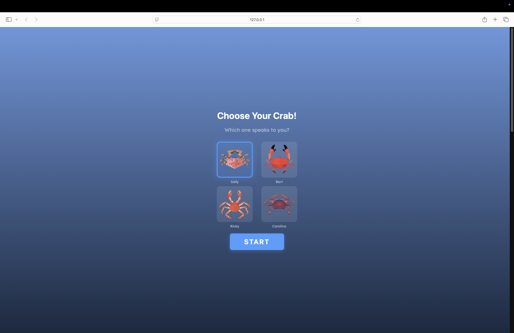
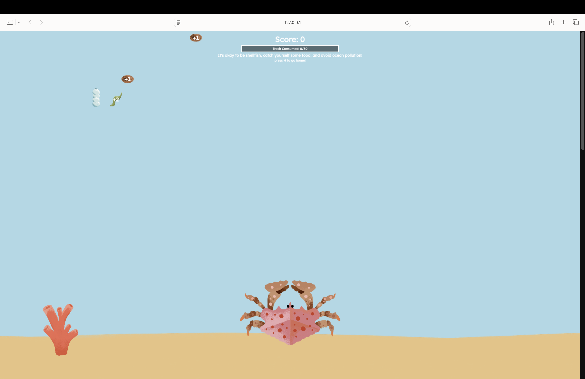
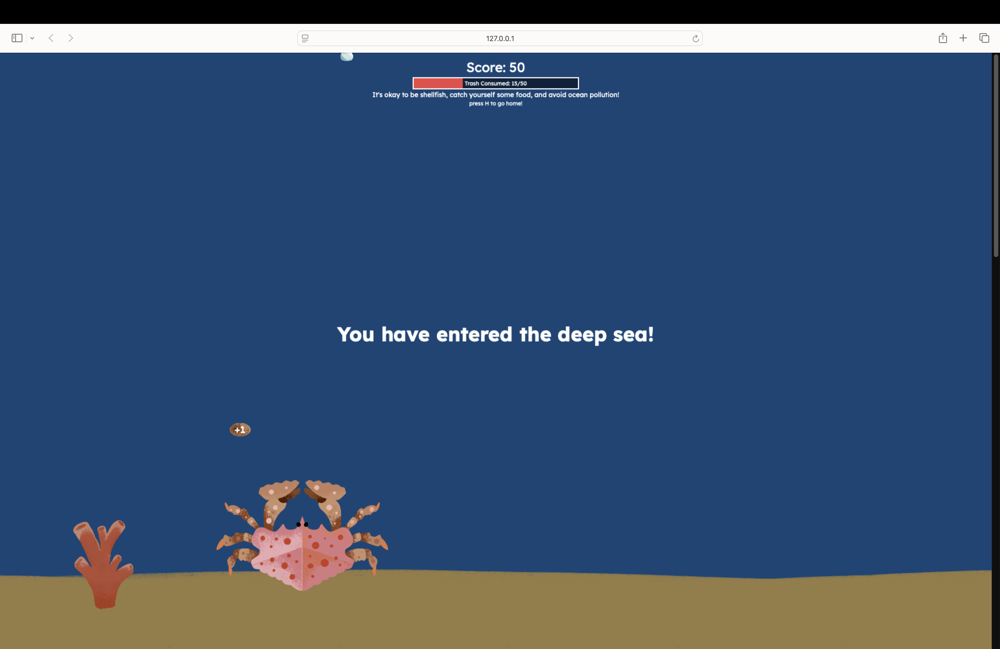
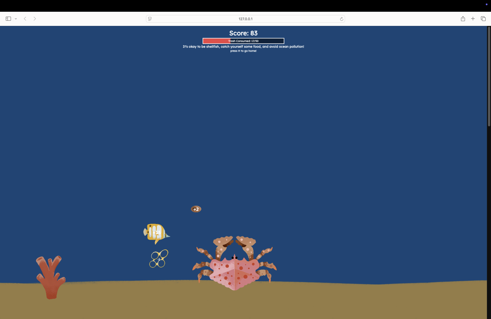
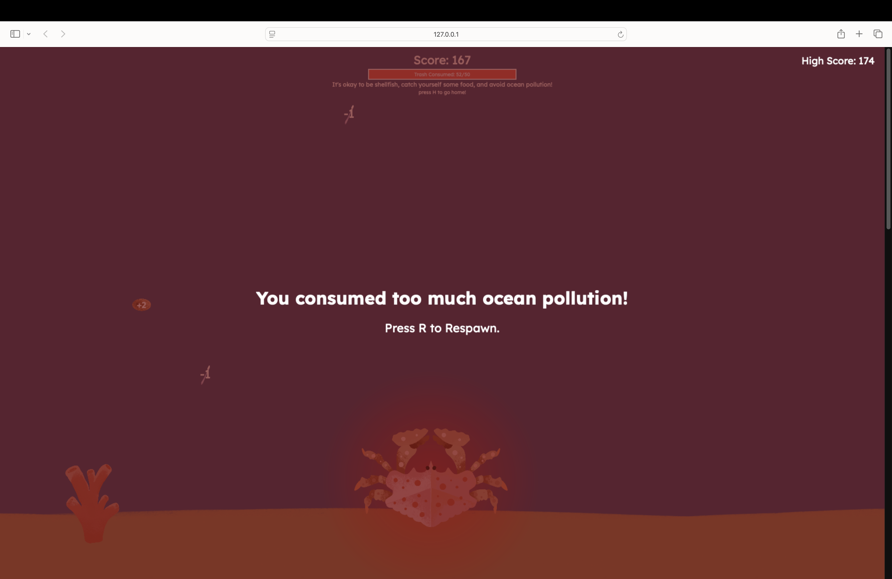

Choose Your Crab!
Which one speaks to you?
 Sally
Sally
 Bert
Bert
 Ricky
Ricky
 Carolina
Sally
Bert
Ricky
Carolina
Carolina
Sally
Bert
Ricky
Carolina
Guide your crab through the ocean and catch as much food as possible while avoiding ocean pollution. Reach 50 points to descend into the deep sea where more valuable food awaits! But be careful - if you consume 50 points worth of trash, your crab will die from pollution poisoning!

Choose Your Crab

Level 1 - Shallow Waters

Level 2 - Deep Sea

Deep Sea Gameplay

Game Over
Controls: Use the Left and Right Arrow keys to move your crab horizontally.
Gameplay:
Game Design & Development: Madeline Faulds
Special Thanks: Thank you Dad, for your invaluable help and support!